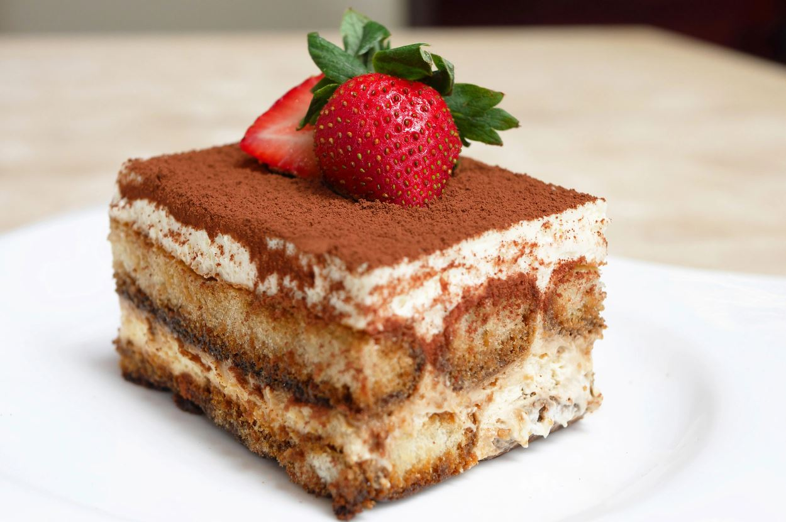

Tiramisu
İtalya’nın ünlü tariflerinden birisi olan Tiramisu Tarifi!
Tarif : Ezgi Sarı

Kaç Kişilik : 4 kişilik
Hazırlama Süresi : 120 dakika
Pişirme Süresi : 20 dakika
Tiramisu
tarifi için malzemeler
- 1 Adet Kakao
- 1 Adet Hazır Kahve
- 1 Paket Peynir
- 3 Kaşık Un
- 3 Kaşık Toz Şeker
- 2,5 Bardak Süt
- 1 Adet Pandispanya Keki
Tiramisu
Nasıl Yapılır?
- Tencerenin içerisine malzemeleri ekledikten sonra ocağın üzerine alın, ocağın altını orta
derecede açın karıştırmaya başlayın.
- Krema hazır olduktan sonra, geniş bir tabağın içerisine 1 adet hazır kahveyi ve 1 bardak sıcak
suyu ilave edip birkaç dakika kadar karıştırın.
- Fırından çıkan hamurun içine tatlının muhallebisini yediriyoruz.
- Kekin alt kısmını, kahve karışımlı suyla iyice ıslatın.
- Kekin tamamını krema ile kapladıktan sonra üzerine kakao döküyoruz.
- Tiramisu tarifi hazır!